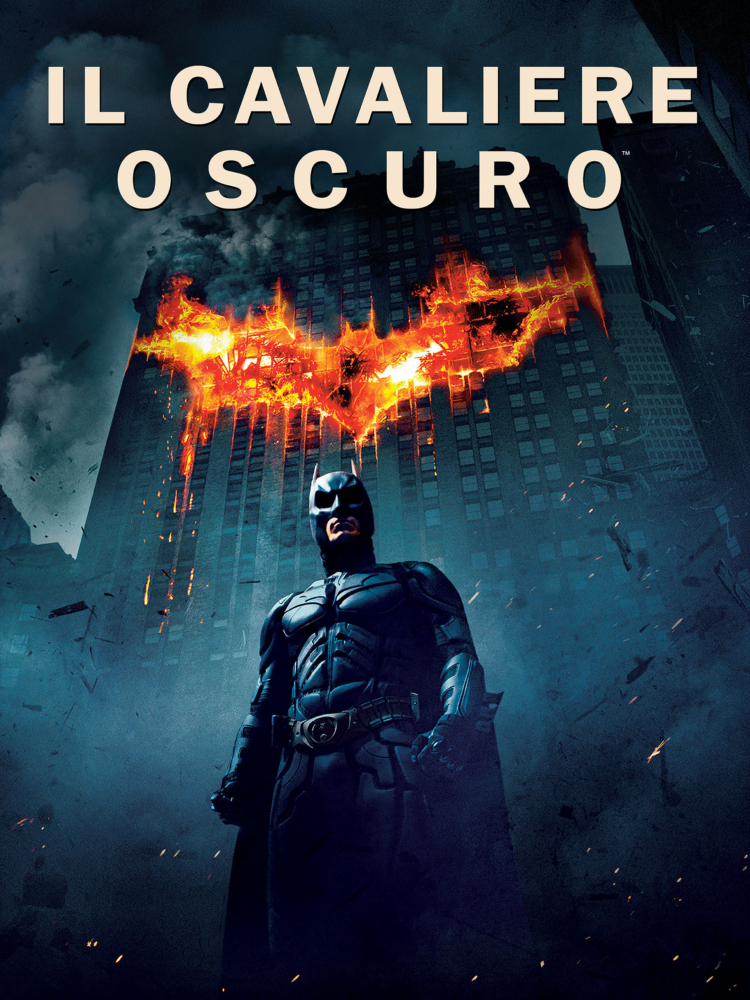

In un futuro non precisato, un drastico cambiamento climatico colpisce duramente l'agricoltura. Il granturco è l'unica coltivazione ancora in grado di crescere ed un gruppo di scienziati è intenzionato ad attraversare lo spazio per trovare nuovi luoghi adatti a coltivarlo.

Il Cavaliere Oscuro
Batman e Jim Gordon si alleano con il nuovo procuratore di Gotham City, Harvey Dent, per combattere il crimine organizzato che dilaga in città e fermare un pericoloso rapinatore, il Joker, che ha gettato la città nell'anarchia.
Inception
Dom Cobb possiede una qualifica speciale: è in grado di inserirsi nei sogni altrui per prelevare i segreti nascosti nel più profondo del subconscio. Viene contattato da Saito, un potentissimo industriale giapponese.